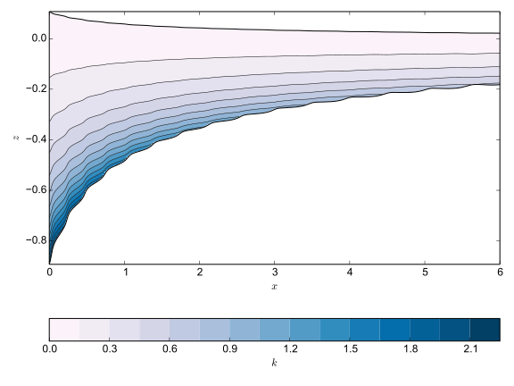

ISOFT has the ability to simulate the advection of a Lagrangian tracer distributed in the z-direction. The main use for this is to track the evolution of isochrones, which correspond to internal radar reflectors observed in ice sheets and shelves. ISOFT achieves this by expressing the tracer as a Taylor expansion in z and then calculating changes to the Taylor coefficients. It is only the coefficients which are stored.
Visualising this tracer data requires converting it to a 2-D form in
x and z. For this purpose, the plotting/layers.py module
provides a routine called compute_layers. This has the call
signature
x, z, k = compute_layers(shelf, vertical_resolution=300)
where x and z are 2-D arrays containing the coordinates in x and
z respectively, k is a 2-D array containing the values of the
tracer. These are calculated from shelf, which is either a Glacier
or a ShelfPlumeCryosphere object (see
Reader Objects). The number of intervals in z on
which to calculate k is set by the argument vertical_ resolution.
With this output, a contour plot can be produced, showing the presence of internal layers within the ice shelf. This is demonstrated in the script below, along with example output.
from plotting.readers import ShelfPlumeCryosphere from plotting.layers import compute_layers import numpy as np import numpy.ma as ma import matplotlib import matplotlib.pyplot as plt cryo = ShelfPlumeCryosphere('isoft-0000.h5') nz = 1200 conts = 16 x, z, k = compute_layers(cryo, nz) plt.plot(cryo.grid, cryo.s, 'k') plt.plot(cryo.grid, cryo.b, 'k') plt.contour(x, z, k, conts, linewidths=0.5, colors='k') plt.contourf(x, z, k, conts, cmap='PuBu') plt.xlabel('$x$') plt.ylabel('$z$') plt.colorbar(orientation='horizontal', label=r'$k$') plt.show()
